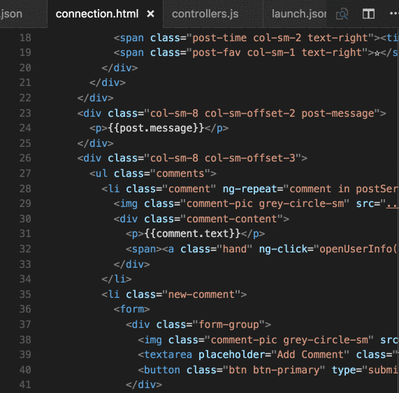

VS Code для вёрстки
Расширение CSS Peek для Visual Studio Code - это инструмент, который значительно облегчает процесс работы над веб-проектами. Когда вы работаете с HTML-файлами и нужно быстро найти определенное CSS-правило, это расширение становится настоящим спасением. Оно позволяет мгновенно просматривать стили, примененные к конкретному элементу прямо в коде HTML, не переключаясь между файлами.
Как это работает? Просто наведите курсор на класс или идентификатор CSS в вашем HTML-коде, нажмите Shift + F12 и CSS Peek отобразит соответствующие стили во всплывающем окошке прямо рядом с вашим кодом. Это значительно экономит время, которое обычно тратится на поиск и анализ CSS-файлов для выявления стилей, примененных к определенному элементу.
Благодаря CSS Peek вы можете сфокусироваться на конкретных стилях, примененных к элементу, и быстро редактировать их без необходимости переходить к файлу со стилями и искать нужные селекторы среди множества других правил. Это улучшает производительность и сокращает время, потраченное на поиск и редактирование стилей, делая процесс разработки более эффективным и удобным.
